| Up | Next | Prev | PrevTail | Tail |
Author: G. Üçoluk.
The operator changevar does a variable transformation in a set of differential equations. Syntax:
| changevar(⟨depvars⟩, ⟨newvars⟩, ⟨eqlist⟩, ⟨diffeq⟩) |
⟨diffeq⟩ is either a single differential equation or a list of differential equations, ⟨depvars⟩ are the dependent variables to be substituted, ⟨newvars⟩ are the new depend variables, and ⟨eqlist⟩ is a list of equations of the form ⟨depvar⟩=⟨expression⟩ where ⟨expression⟩ is some function in the new dependent variables.
The three lists ⟨depvars⟩, ⟨newvars⟩, and ⟨eqlist⟩ must be of the same length. If there is only one variable to be substituted, then it can be given instead of the list. The same applies to the list of differential equations, i.e., the following two commands are equivalent
except for one difference: the first command returns the transformed differential equation, the second one a list with a single element.
The switch dispjacobian governs the display the entries of the inverse Jacobian, it is off per default.
The mathematics behind the change of independent variable(s) in differential equations is quite straightforward. It is basically the application of the chain rule. If the dependent variable of the differential equation is F , the independent variables are xi and the new independent variables are ui (where i=1…n) then the first derivatives are:
|
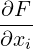 =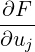 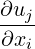 |
We assumed Einstein’s summation convention. Here the problem is to calculate the ∂uj∕∂xi terms if the change of variables is given by
| xi = fi(u1,…,un) |
The first thought might be solving the above given equations for uj and then differentiating them with respect to xi, then again making use of the equations above, substituting new variables for the old ones in the calculated derivatives. This is not always a preferable way to proceed. Mainly because the functions fi may not always be easily invertible. Another approach that makes use of the Jacobian is better. Consider the above given equations which relate the old variables to the new ones. Let us differentiate them:
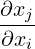 | = 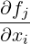 | ||
| δij | = 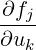 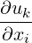 |
The first derivative is nothing but the (j,k) th entry of the Jacobian matrix.
So if we speak in matrix language
| 1 = J ⋅D |
where we defined the Jacobian
|
Jij 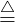 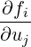 |
and the matrix of the derivatives we wanted to obtain as
|
Dij 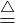 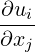 . |
If the Jacobian has a non-vanishing determinant then it is invertible and we are able to write from the matrix equation above:
| D = J−1 |
so finally we have what we want
|
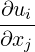 =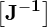 ij |
The higher derivatives are obtained by the successive application of the chain rule and using the definitions of the old variables in terms of the new ones. It can be easily verified that the only derivatives that are needed to be calculated are the first order ones which are obtained above.
The 2-dimensional Laplace equation in cartesian coordinates is:
|
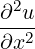 +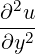 = 0 |
Now assume we want to obtain the polar coordinate form of Laplace equation. The change of variables is:
| x = r cos𝜃, y = r sin𝜃 |
The solution using changevar is as follows
Here we could omit the curly braces in the first and last arguments (because those lists have only one member) and the curly braces in the third argument (because they are optional), but you cannot leave off the curly braces in the second argument. So one could equivalently write
If you have tried out the above example, you will notice that the denominator contains a cos2𝜃 + sin2𝜃 which is actually equal to 1. This has of course nothing to do with changevar. One has to be overcome these pattern matching problems by the conventional methods REDUCE provides (a rule, for example, will fix it).
Secondly you will notice that your u(x,y) operator has changed to u(r,theta) in the result. Nothing magical about this. That is just what we do with pencil and paper. u(r,theta) represents the the transformed dependent variable.
Consider a differential equation which is of Euler type, for instance:
| x3y′′′− 3x2y′′ + 6xy′− 6y = 0 |
where prime denotes differentiation with respect to x. As is well known, Euler type of equations are solved by a change of variable:
| x = eu |
So our call to changevar reads as follows:
and returns the result
| Up | Next | Prev | PrevTail | Front |